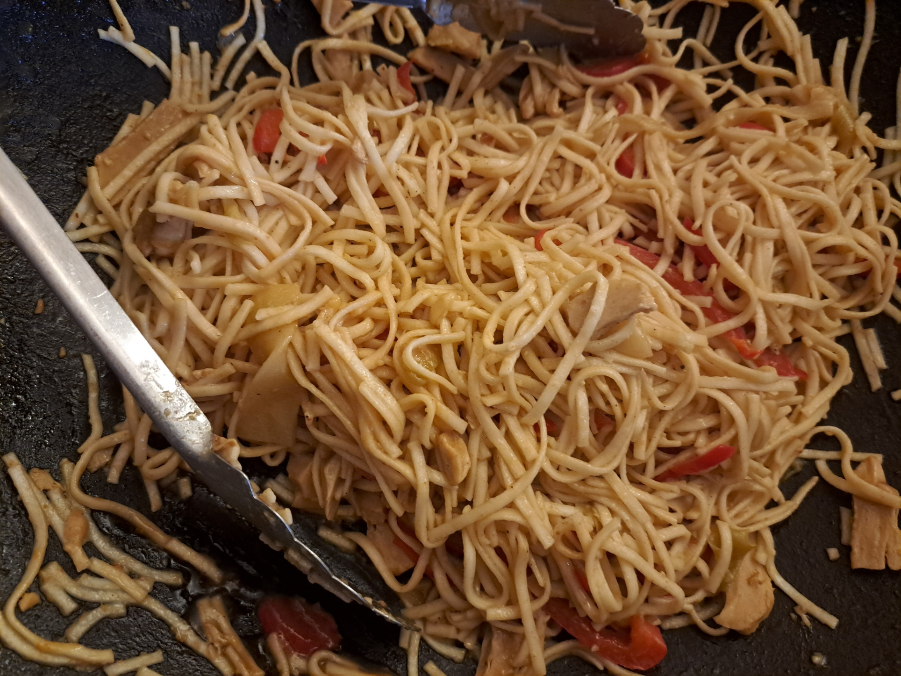

Asian Noodle Stir-Fry with Veggies

Instructions
1
Prepare the vegetables
Wash and slice the bell peppers into strips. Set aside in a mixing bowl. Peel, wash, and make zucchini ribbons. Add them to the same bowl.
2
Marinate the veggies
Add soy sauce to the bowl and let the vegetables marinate.
3
Cook the plant-based strips
In a wok, sauté the plant-based strips until they start to brown slightly.
4
Combine and season
Add the marinated vegetables to the wok. Stir-fry while adding ginger, garlic powder, 1 or 2 spoon(s) of peanut butter, curry powder, and coconut milk. Stir regularly.
5
Cook the noodles
In parallel, cook the noodles according to package instructions. Drain well.
6
Mix everything together
Add the noodles to the wok. Lower the heat and pour in oyster sauce to taste. Mix thoroughly.
7